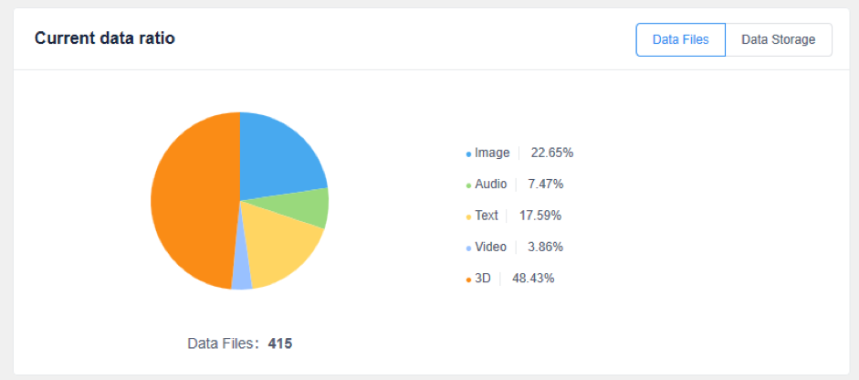
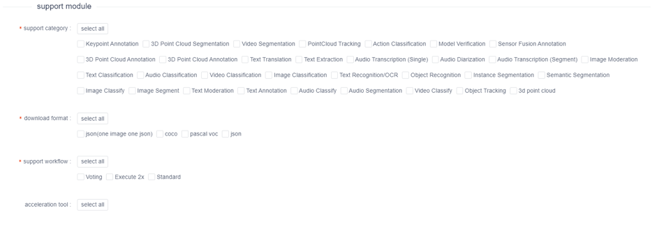
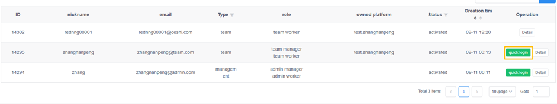
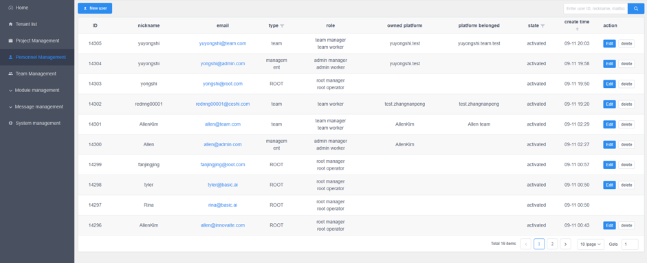
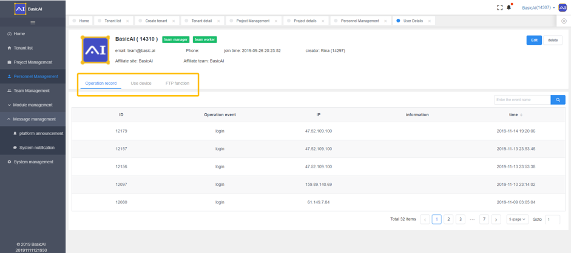
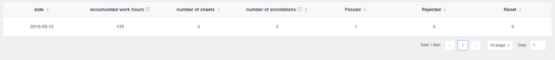
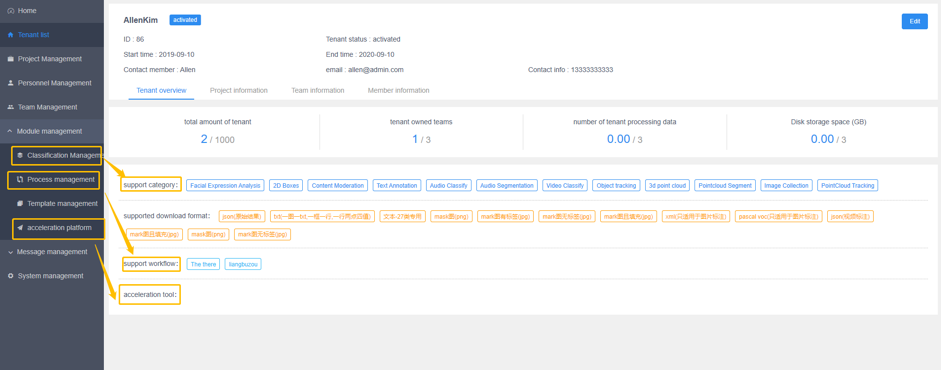

Root Module
This is an outline of the Root Module, which is to be accessed by Account Administrators for backend workflow definition.
Platform Login
As a root user, you will log into the platform through below URL
https://root.saas.basic.ai/login (SAAS)
https://root.sandbox.basic.ai/login (Sandbox)
1. Workflow Overview
Each Project starts with a detailed set of requirements. The BasicAI team will work with the customer to develop detailed requirements and create annotation template(s) for each Task, using the Admin module of OnPrem platform.
We will send client requirement sheet to the BPO Team Manager through email. The BPO team needs to see the requirements carefully and arrange the Operators/Workers according to the volume and delivery time. Your team can ask us any questions they may have and give us the working plan, such as total number of Operators/Workers, Operators/Workers for each batch, estimated time of completion, etc. For Projects with a large volume of data, normally we will give you Tasks in batches. After total understanding of the requirements, the Operators/Workers can begin their annotation work.
1.1 Changes to Requirements
Customer users have access to a dashboard in their Admin module that enables them to track Project progress and also review results as they are produced. BasicAI OnPrem is designed to enable customers to make any necessary adjustments at the beginning of a Project, which is much more efficient than doing rework at the end of a Project if the customer’s requirements were not entirely correct. If customers make changes to their requirements after the Project has started, we may need to make changes to their template as well.
The BasicAI team will inform the designated Team Manager of any new requirements or changes to existing requirements in a timely manner. We expect the Team Manager will inform its Operators/Workers of any changes, the Operators/Workers with conform to the new requirements going forward, and additional QC may be required for labeling done prior to the changes.
1.2 Communication
During each Project, we rely on timely communication through email, slack, or agreed upon social media, so that both parties can address issues as they arise.
1.3 Quality Inspection
After executing each Task, the supervisors of your BPO team should audit all of the work performed by your team, before submitting to BasicAI for Audit and approval. BasicAI closely monitors the productivity and error rates of its partners in order to provide its clients with the best results possible. Low productivity and/or high error rates lead to lower volumes of business that we are able to source through your BPO firm, so it is important to internally monitor your own metrics.
2. Dashboard
2.1 User statistics
User statistics: total number of registered users on platform
New users tin past 7 days: number of newly-registered users in past 7 days
Active users: Users who have logged in in the past seven days
2.2 Team statistics
Team statistics: total number of teams created on platform
New teams in the past 7 days: number of new teams created in past 7 days
Active teams: teams that have submitted job in past 7 days are considered ACTIVE
2.3 Tenant statistics
Tenant statistics: total number of tenants created on platform
New tenants in the past 7 days: number of new tenants created in past 7 days
Active tenants: tenants whose team members have submitted job or whose administrators have published a project are considered ACTIVE
2.4 Project statistics
Project statistics: total number of projects created on platform
New projects in the past 7 days: number of projects created tin past 7 days
Running projects；projects that are in the status of "working"
2.5 Data Proportion
This calculates the total amount of data released by tenants and the proportions of the 5 types of data (image, audio, text, video and 3D ). The percentages of the 5 types of data are demonstrated in the form of a pie chart. When the mouse moves over a colored slice of the chart, details about the data represented by the colored slice will be shown, including data type, data volume and proportion (see the picture below).
Data Files: 
Data Storage:
2.6 Project Overview
This counts the total number of projects released by all the tenants on the platform and shows the proportion of each project type in a pie chart. When the mouse moves over a colored slice of the chart, details about the data represented by the colored slice will be shown (including project type, the number of projects and proportion).
2.7 Data throughout
Data throughout showcases the overall operation of the platform by displaying the volume of released data and the volume of executed data on the platform.
Volume of released data: the volume of data from projects that have been uploaded and released
Volume of executed data: the volume of data that have been executed
In the line chart, when the mouse moves over a certain date, the volume of released data and the volume of executed data from that particular day will be displayed (see the picture below).
3. Tenant Management
3.1 Create Tenant
In tenant list, click ‘create tenant’ and enter into the create tenant page.
After filling out the new tenant info and click ‘confirm to create’.
3.2 Tenant Basic Information
At first, fill in the tenant basic info, logo and tenant name.
3.2.1 Manager Information
Manager is the first user of the tenant and she/he defaults to the administrator in the admin platform.
The administrator's nickname, password, mailbox and telephone numbers are required items, and mailbox and telephone number cannot be repeated with other users of the platform.
3.2.2 Resources available
Permission start time, end time, maximum number of tenant’s users and teams, Maximum number of users in each team, Maximum volume of data and disk space limit.
Permission start time and end time are required. Tenants can log into the tenant platform with the time frame.
Permission start time and end time can be quickly selected through the recommendation
The recommended end time is 15days, 30days and one year, which means permission end time shall end after 15 days, 30days and one year from the start time.
Team numbers limit: The number of executed teams a tenant can have, with a minimum unit of 1.
User numbers: The number of users that can be owned by the tenant, including the number of users in the admin platform and the executable team owned by the tenant.
Data volume limit: The amount of data that a tenant can publish and tenants cannot publish data that exceeds such amount.
Hard disk space limit(GB): The tenant can not publish data amount beyond the limitation.
3.2.3 Support Template
Functional module available to tenants includes support annotation category, download format, support workflow and acceleration tool. All these templates can be created in module management.

3.3.Tenant list
Tenant list displays all tenants within the platform.
The user can know the tenant ID, tenant name, tenant status, the number of users and subscription time of the tenant.
Tenant status includes inactive, activated, disabled, expired. Only activated tenants can log into the platform.
Number of users: the number of users already owned by the tenant, including disabled user, excluding deleted user.
Subscription time: start time and end time. It is a time range for the tenant to use the platform.
Operation: User can [disable] and [delete] the tenant in this page, the disabled tenant can be [restart] and the tenant details page can be entered by clicking ‘view’ or tenant name.
3.3.1 Tenant details
On this page, it shows the tenant basic info, name, ID, status, start time, end time, contact number and emails.

In addition to the basic info, it displays tenant overview, project information, team information and member information.
3.3.2 Tenant Overview
Tenant overview displays available data and tenants usage. For the below chart, the blue number is the data usage of tenant and the gray number is the total amount of available data.
The supported templates will also be displayed on this page as a tag.
3.4 Project Information
All projects in the tenant will be presented here. On this page, you can complete the search by inputting project name and ID and click the corresponding project name to enter the project details page.
3.5 Team Information

All team within the tenant are presented here. You can complete the search by inputting team name and ID and select the team by status and creation time and it can be filtered and sorted by status/creation time.
3.6 Member Information
All member info of the tenant will be presented here, including admin platform and team platform. You can complete the search by inputting name and ID. It can be filtered and sorted by user type (role)/status/creation time; and click [detail] to see the member information.
Here, you can login directly to the team account.

Root administrator can login to any user’s account without affecting the user’s current login status.
4. Project Management
In project management, projects created by all tenants can be viewed and projects can be searched by project name and ID and sorted by category, status, total number of jobs, start time and end time. You can not operate project and only click the project name or [view]to see the details.
4.1 Project Details
The project details page shows the basic info for the project, including project name, ID, type, start time, end time, tenant and creator.
Project details include project overview, data list, project performance, online quality inspection, download result and record.
4.2 Project overview
Project overview shows the project info, progress, upload data, project template and.
Project info: It shows the total project, batch number, number of operations, number of numbers, number of participants and accumulative work hours.
Project progress: Project progress shows the progress of the project in batches, with one batch for each time and batch name is in the upper left corner of each row (batch ID).
Each progress bar in the row represents a process under the current batch. The progress percentage of the process is displayed on the left side of the process progress, and the process name of the current process is displayed on the right side. When the mouse click the progress bar, it will show the current task details.
Upload data：File name, file size and upload time of the annotated data
Project template: Project template and the process.
4.3 Data list
All project data will be displayed in a list here. On this page, you can do the data search by inputting name and sort the data through name, start time and updated time.
4.3 Project Performance
The below image shows each operator’s job performance
5. Personnel/User Management
5.1 Create new user
Click [New user] on the upper left of the user list to open the new user popup window.
Root users can create users for Root platform, Admin platform(tenant platform) and Team platform (data annotation platform).
When you create a user for admin platform, you need to select an owned tenant.
When you create a user for team platform, you need to select an owned tenant and team.
5.2 User List

The user list interface displays all users in the platform.
You can know the user ID, nickname, email, type, role, tenant(owned platform), team(platform belonged), status and their creation time.
Activated, inactive and disabled are the three different statuses that user can have and only activated user can login to the platform.
Operation: Root platform’s administrator can [edit] and [delete] the user in the list and change the user status by clicking edit.
Click user email and enter the tenant info page.
5.3 User Information

On this page, it shows the user’s basic info, including name, ID, role, email, phone,affiliate site(assigned tenant), affiliate team(assigned team) and join time(enrollment). You can click [edit] to edit the info.
In addition, there are operation record, Use device and FTP function.
Operation record and Use device are used for checking the user status.
FTP: Click [create/detect FTP ]to open FTP. This feature can only be enabled for root administrator.

6. Team Management
6.1 Create Team
Click [create team]at the top left of the list to open the new pop-up window. The created team must belong to one tenant.
When the number of teams has reached the upper limit, you cannot create team for the corresponding tenant.
6.2 Team List
Team list shows all the teams in the platform.
You can see the ID, team name, owned/assigned tenant, number of team members , status creation time and operation.
Activated, inactive and disabled are the three different statuses that user can have and only activated team can login to the platform.
You can [edit], [check the performance ]and [disable] team. The disabled team also can be [restore].
Click [performance] and then you can check the user performance.

7. Module Management
There are classification management, process management, template management and acceleration platform. You can setup classification management and acceleration platform in the [create tenant] or [tenant edit] page.

7.1 Classification/Category management
You can create a new category and manage the existing category.
7.1.1 Category List
You can see the configured details of each category on the list and complete the search by inputting the name and ID.
7.1.2 Create new /edit category
To configure a category, you need to configure the basic information and template details of each category.
Category basic info includes label type, task type, uploaded file type, data file type, data filed value, template field value and display icon.
When you edit the classification, please make sure do not edit [data field value] and [template field value]. If needed, you should contact with the platform engineer.
7.2 Process Management
7.2.1 Process List
The process list shows the flow chart created by the user in the form of a card, and can complete the [edit] or [delete] operation in the existing process, the process can be searched by the process name in the upper right corner of the page.
7.2.2 Create/Edit Process
Click [create workflow] to create or edit a process, you need to configure basic information about the process, including the process name, process/workflow description, and set workflow. The process is enabled and can be selected when the tenant is created.
The workflow is set up by the parent step-by-step method to realize the association among processes, and combined into a workflow.
Click [Edit] on the right side of the process to edit the process information.
Click the [Preview] button in the lower left corner to preview the configured flowchart in the popup window.
If you are not satisfied with the position of the added distribution, you can drag the mouse over the current process, and after the mouse becomes a cross, drag its position.
7.2.3 Use of the Process
Tenants with process usage rights can display the process list in the project setup process step when creating the project on the admin platform. The tenant can click [Use this process] to transfer process and process flow relationship in the operation list. The tenant administrator will perform the second step configuration by executing the process selection template.
7.3 Template Management
7.3.1 Create Template
Click create, select the corresponding user case and enter into the template setup page.
The template interface is divided into 4 areas, upper side: [edit template basic info area]; left side:[operation components area]; middle: [template layout design area]; right side: [property setting area].
You can set the template name, type, tenant, category and whether the template is a public or private. Public template can be seen by all tenants, while the private template is only visible to the specified user. Different template category has different operation components.
The below picture is a template for image annotation, you can see the components of key points, key points groups, image annotation tools and OCR. All the above mentioned components can be used only in image annotation user case.
7.3.2 Key points/ Key point group
The difference between key points and key point group is that key point can only be annotated with a set of key points, and a key point group can be annotated with multiple sets of key points.
Key point
Key point group
[Click edit key location] to modify the sample position.

Click [Replace image] to change the sample image.
7.3.3 Image annotation tool
You can setup correct and corresponding annotation tool for image annotation so as to reduce the amount of work and errors that may happen.
7.3.4 OCR
OCR transcription supports rectangular tool annotation, which transcribes the content of the annotation. This function is available for projects that billboard, bullet screen, table transcription. It should be noted that if you use this function, the rectangular tool in the image annotation tool needs to be lit up.
7.4 Acceleration Tool/Platform
Acceleration Tools: Using the model to pre-process data, it will speed up operator’s operation.
8.Message Management
8.1 Platform announcement
You can set the announcement to a certain placement.
Send Announcement: You need to specify the announcement to a certain platform, the available time and the content.
Announcement will display in the header location of the platform and if there are two announcements in conflict, the platform will show the latest published announcement.
8.2 System notification
System notification record job notification on the platform.
9. System Management
System management include System functions and Permission configuration. You can manage these parts accordingly.